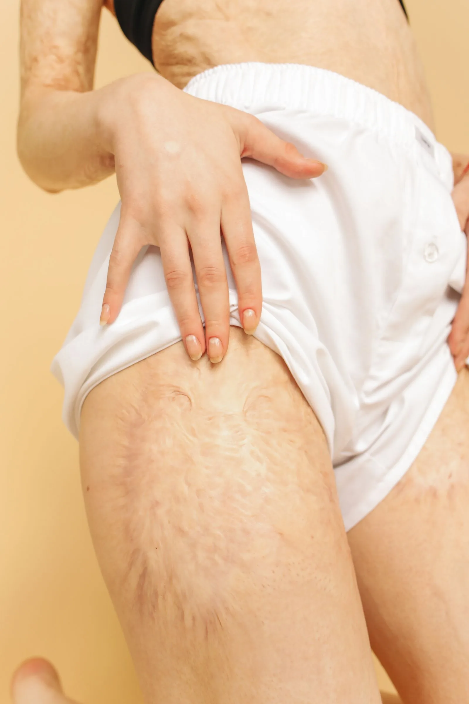

Drenaje linfático en el lipedema: qué esperar
Si tu terapeuta o tu médico te han hablado del drenaje linfático para el lipedema y no sabes bien qué es ni qué va a pasar en la camilla, aquí te lo explicamos con calma: en qué consiste, qué puede aportarte y qué no debes esperar de él.

El drenaje linfático en el lipedema es una de las herramientas más nombradas cuando se habla de manejo conservador, y también una de las que más dudas genera. ¿Sirve para todas las etapas? ¿Duele? ¿Reduce el volumen de las piernas? Vamos por partes: entender bien qué es te ayuda a saber qué esperar de esta terapia, y a no hacerte ilusiones que ella no puede cumplir.
¿Qué es el drenaje linfático manual y por qué se usa en el lipedema?
El drenaje linfático manual (DLM) es una técnica de masaje suave, con movimientos rítmicos, lentos y de muy poca presión. Está diseñada para estimular el sistema linfático y ayudar a que la linfa fluya mejor hacia los ganglios que la filtran.
Aquí conviene aclarar algo importante: el lipedema no nace de un problema del sistema linfático. Es una alteración del tejido graso y del tejido conjuntivo. Pero con el tiempo, sobre todo en etapas más avanzadas, ese tejido puede sobrecargar el sistema linfático que lo atraviesa, al punto de que este empieza a drenar peor. Cuando eso pasa, se suma un componente de líquido al de grasa: es lo que en el blog llamamos lipo-linfedema, y puedes leerlo con más detalle en nuestro artículo Etapas del lipedema: cómo evoluciona con el tiempo. Por eso el DLM tiene sentido, sobre todo, cuando hay este componente de hinchazón por líquido, y no como tratamiento del tejido graso en sí.
¿En qué se diferencia de un masaje relajante común?
Es una pregunta muy frecuente, porque a simple vista los dos parecen "un masaje en las piernas". Pero la técnica y el objetivo son distintos:
- Presión: el DLM usa una presión muy suave, apenas la necesaria para estirar la piel; nunca una presión profunda o descontracturante como en un masaje relajante.
- Ritmo y dirección: los movimientos son lentos, rítmicos y siguen un patrón que respeta el recorrido del sistema linfático, no una rutina libre.
- Objetivo: busca facilitar el drenaje del líquido, no relajar la musculatura ni generar esa sensación de "trabajo profundo" en el tejido.
- Quién lo aplica: idealmente, un fisioterapeuta o terapeuta con formación específica en drenaje linfático, no cualquier perfil de masajista.
Qué esperar de una sesión de drenaje linfático
En una primera sesión, lo habitual es que tu terapeuta empiece con una valoración: te preguntará por tus síntomas, revisará la zona afectada y, si hace falta, coordinará con tu médico tratante antes de iniciar. La sesión en sí suele sentirse como una serie de caricias suaves y repetitivas, con muy poca presión; no debería causarte dolor. Muchas personas la describen como relajante, y algunas hasta se quedan dormidas.
Es normal que necesites ir al baño con más frecuencia en las horas siguientes, porque tu cuerpo está movilizando líquido. También es habitual sentir las piernas más livianas al terminar, aunque esa sensación puede variar de una persona a otra, e incluso de un día a otro en ti misma.
¿Qué beneficios respalda la evidencia disponible?
La evidencia científica sobre el drenaje linfático se ha estudiado sobre todo en linfedema —por ejemplo, tras cirugía de cáncer de mama—. En lipedema, la investigación específica todavía es limitada. Aun con esa salvedad, lo que reportan de forma más consistente los estudios y las organizaciones especializadas es que el DLM, dentro de un manejo conservador más amplio, puede ayudar a aliviar la hinchazón, la pesadez y la tensión. También puede mejorar tu bienestar general y tu calidad de vida. Si el dolor es uno de tus síntomas principales, te puede interesar también nuestro artículo Dolor por lipedema: causas y manejo conservador.
Y es igual de importante decirte con claridad qué no hace: el drenaje linfático no reduce ni elimina el tejido graso del lipedema, y por sí solo no detiene su progresión. Es una herramienta de alivio sintomático, no una cura ni un tratamiento estético para "bajar volumen".
¿Con qué frecuencia se recomienda?
No existe una frecuencia única que sirva para todas las personas. Depende de la etapa del lipedema, de si hay componente de líquido asociado, de tus síntomas y de tu respuesta a la terapia. Por eso es tu terapeuta o tu médico quien debe definir, junto contigo, cada cuánto tiene sentido en tu caso, después de una valoración adecuada.
Cómo se combina con otras medidas del manejo conservador
El drenaje linfático casi nunca se usa solo. Suele formar parte de lo que se conoce como terapia descongestiva combinada, junto con prendas de compresión, cuidado de la piel y ejercicio de bajo impacto. Si quieres saber qué tipo de movimiento es más amigable con tus piernas, te dejamos nuestro artículo Ejercicio y lipedema: cómo moverte sin miedo y sin dolor.
Conocer cómo encajan todas estas piezas te da una visión más completa de lo que significa acompañar el lipedema de forma conservadora, sin cirugía. Si quieres repasar el panorama completo, desde qué es hasta cómo se diagnostica y se maneja, tenemos nuestra Guía completa del lipedema: qué es, etapas, diagnóstico y tratamiento. En Seravena acompañamos ese proceso desde nuestra consulta de lipedema. Si quieres resolver tus dudas con acompañamiento profesional, puedes agendar tu valoración.
Preguntas frecuentes
¿Qué es el drenaje linfático manual en el lipedema?
Es una técnica de masaje suave, con movimientos rítmicos y muy poca presión, pensada para estimular el sistema linfático y facilitar el movimiento del líquido a través de él. En el lipedema suele usarse para aliviar la sensación de pesadez y tensión, no para eliminar el tejido graso.
¿El drenaje linfático reduce la grasa del lipedema?
No. El drenaje linfático manual puede ayudar a aliviar la hinchazón, la pesadez y la tensión, pero no elimina ni reduce el tejido graso propio del lipedema. Forma parte del manejo conservador de síntomas, no es un tratamiento para bajar de volumen.
¿Cada cuánto se recomienda el drenaje linfático en lipedema?
No hay una frecuencia única válida para todas las personas. Depende de la etapa del lipedema, de los síntomas y de si hay compromiso linfático asociado, así que tu terapeuta o tu médico son quienes deben definir la frecuencia que más te conviene.
¿El drenaje linfático duele?
No debería doler. Es una técnica de presión muy suave, distinta a un masaje profundo o descontracturante. Si sientes dolor durante la sesión, coméntaselo a tu terapeuta: la presión se puede ajustar.